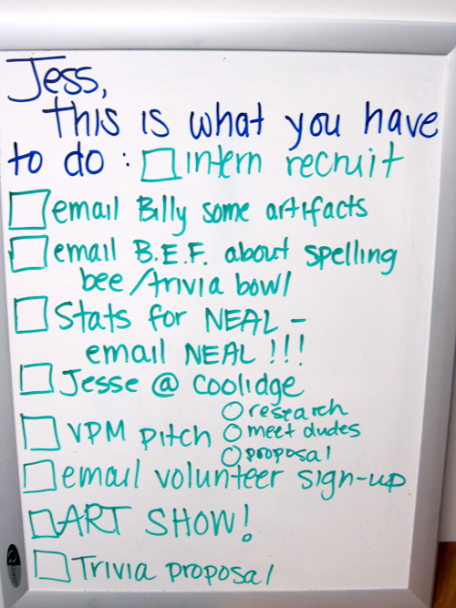

organizing
Youth Learning and Cablecast Development
Organization:
Grand Rapids Community Media Center VISTA Name:
Amy McKenzie
Program Start:
9/2002
Program End:
9/2003
Project Description:
This month will end the VISTA tenure of Amy McKenzie with the Mobile Learning lab for Information Education (MoLLIE) of Grand Rapids Community Television (GRTV).
Amy’s year with MoLLIE was characterized by a maturing of the project, both in its partnerships with area schools and its facility with linking MoLLIE efforts to the area mandated curriculum. Relationships that were begun with area teachers in our first year of operation continued and thrived. Those teachers that utilized MoLLIe in the first year actively promoted the MoLLIE project to their colleagues leading in turn to an expanded clientele of teachers in a broader selection of schools.
Project Outcome:
Amy played a crucial role in this path to success for the MoLLIE project. She produced an eight minute promotional DVD for the MoLLIE project. The DVD has been extensively utilized over this past year to immediately familiarize area teachers, principals, and school administrators with the educational services provided by MoLLIE. Amy’s production has been crucial in spreading the word in our community of the availability and the successes of the MoLLIE project. Not only is the promotional DVD an accurate portrayal of the efforts of the MoLLIE project but it also represents the talents of Amy as a film and video artist. This year, in national competition, Amy’s DVD won the Alliance for Community Media award for documentary video.
Amy has also provided stellar service to MoLLIE by producing for cablecast a weekly program entitled MoLLIE Matinee, a showcase of the works of students and NPOs produced with MoLLIE assistance. By the end of this reporting period there were 44 thirty-minute episodes of MoLLIE Matinee, with more in production.
The MoLLIE office underwent major changes this summer with increases in staff and a move to a much larger office. Amy did a superb job of handling the logistics of the move as well as developing and implementing new organizational procedures for all aspects of the operation, including staff, equipment, and scheduling.
Additionally, Amy has taken charge of making sure that the work on each project in completed, compiled, put to tape, and aired on GRTV as part of “MOLLIE Matinee” which airs every Tuesday at 3:30 p.m. In many ways, the most important part of the video process (including script, story board, shooting, and editing) is watching the final product air on TV, and Amy makes sure that this part happens each week.
Finally, though it hasn’t been mentioned the biggest part of Amy’s work (as it is with every member of our team) is going to the schools and after-school centers and working directly with the students. Amy has a gift for working with students, and a strong background in video production that results in both high-quality student videos and high-impact learning.
Impact Quote:
Amy’s professionalism, demeanor, talent, and organizational skills have secured her a full-time position with GRTV to continue on as the office manager and instructor for the MoLLIE project upon the expiration of her VISTA tenure.
As a long time supervisor and department head, I have seldom had a team member that consistently performs at the high levels of excellence as does Amy McKenzie. The VISTA program should be very proud to have her as an alumna.
Snapshots from the field

Corps member Jessica Wholey gives us a snapshot into her process while working at Brookline Access Television. Jessica is building capacity at BATV this year through outreach, media and technology training, grant writing, volunteer recruitment and website development.

Organizing 2.0
When:
December 5, 2009
Where:
Murphy Institute for Worker Education and Labor Studies, New York City
Website:
http://organizing20.org/ Is online organizing really ‘organizing’? That’s a challenging question for those of us from a labor or community organizing background. That said, online organizing has received a lot of positive attention recently in connection with the presidential elections. What does this mean for our organizations? What skills do we need to share to make the most of no-longer-new online tools for our campaigns in New York?
Registration is now open. Tickets are $15.
Registration on the day of the event will be $20.